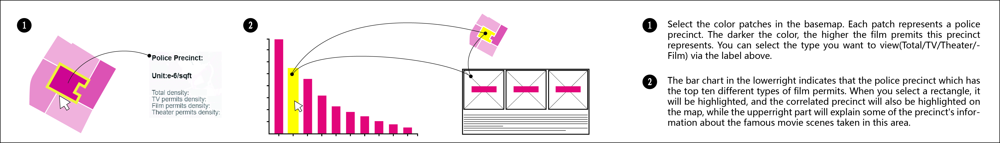

New York Acting Scenes
Ultimate Guide
How to use this guide...

Total
Television
Theater
Film
Interesting facts you should know...
Total Permits Density
TV Permits Density
Film Permits Density
Theater Permits Density